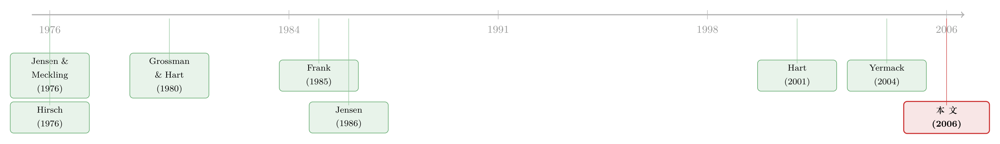

公司专机，到底是老板的私心，还是公司的算盘？
本文读的是 Rajan & Wulf (2006, Journal of Financial Economics)：长期以来，经济学家默认高管的「在职消费」(perks) 就是代理问题的活标本——老板拿公司的钱给自己花。可作者用一份覆盖 300 多家大公司、长达 14 年的私人薪酬调查发现，支持「代理」这一解释的系统性证据其实至多算得上喜忧参半；相反，数据里那些清清楚楚的规律——比如公司专机更常出现在业务地理上更分散、总部远离大机场的公司——更像是在说：很多 perk 是为了省下高管的时间、提升生产率而存在的。把 perk 一概当成「管理层的挥霍」，恐怕是错的。
1 引言：一架专机的两副面孔
先讲两个公司的故事。
一家叫 NorthWestern，是南达科他州的一家公用事业公司，手头紧到连股利都停发了。可就是这样一家公司，2003 年却计划花 $450,000 让它新上任的 CEO 坐公司专机——这还是在 $565,000 的工资、$600,000 的签约奖金、外加最高 $423,000 的潜在激励之上的一笔额外开销。另一家是制药巨头 AstraZeneca，它的 CEO 却颇为自豪地说：「我们坐的就是普通航班。你会像看见任何一个人那样，在机场看见我。」
同样是大公司的 CEO，一个享受着挥金如土的专机待遇，一个挤在登机口和你排同一条队。问题自然就来了：为什么有的公司宁可给高管这些奢侈的「待遇」，而不是干脆把等值的钱发给他、让他自己决定怎么花、活得更自在?
这就是 Rajan 和 Wulf 这篇论文要回答的核心问题。而在他们动笔之前,学界对这个问题其实早有一个「标准答案」。
2 那个被默认了三十年的「标准答案」
这个标准答案，叫代理问题 (agency problem)。
它的逻辑很顺：沿着 Jensen and Meckling (1976)、Grossman and Hart (1980)、尤其是 Jensen (1986) 这一脉，公司金融文献里关于 perk 的主流理论是——perk 是管理层侵占公司剩余的一条通道。为什么能侵占?因为 perk 这东西远处的外人很难观察，它的价值通常被严重低估、甚至根本不向股东披露。（GE 前 CEO 杰克·韦尔奇退休包里那些惊人的待遇，是在他离婚诉讼里被妻子提交的法庭文件曝光之后，公众才大吃一惊地知道的。）
更要命的是，按 Jensen (1986) 的说法，perk 还是一个信号:它意味着这家公司有「自由现金流问题」(free cash flow problem)——钱多到不知道怎么花。所以过度的 perk 往往只是冰山一角，底下藏着的是过度投资、管理松懈这一整套浪费。
关于 Jensen (1986) 这条「自由现金流」的主线为什么影响如此深远、又该如何在今天重读，可参见《现金为什么一定要「还」出去？——四十年后，重读 Jensen 的自由现金流》，以及《债务这副药，为什么不能全吃？——重读 Jensen 和 Meckling 五十年》。
这个故事讲得太漂亮了，以至于「perk = 管理层挥霍」几乎成了金融学里关于代理成本的典型例证。问题是——它有没有被认真地拿到数据面前检验过?
接着，一个自然的问题是:如果代理理论是对的，数据里应该看到什么?
3 把理论翻译成「可以被证伪的预言」
作者的高明之处，是先不急着跑回归，而是耐心地把每一种理论翻译成具体的、互相竞争的经验预言。只有把预言写清楚，数据才能当裁判。
他们摆出了四种解释。
第一种，生产率 (productivity)。 这是最「良性」的解释。一个坐了头等舱、精神饱满地下飞机的高管，比一个在经济舱里蜷了一路、满身疲惫的人，更有可能谈下一笔几十亿美元的合同。可高管本人不会完全内化这份「精神饱满」对公司的全部价值——如果让他自掏腰包，他可能宁愿坐便宜的。于是公司用 perk 替他付。沿着这个逻辑，预言是:① 越能干的员工应该拿到越多 perk;② 省下的时间越值钱的场合，perk 越多;③ 由于省时间对最能干的人最值钱，当省时间的潜力上升时,perk 应该不成比例地向这些人倾斜。
第二种，私人收益 (private benefits)，也就是代理。 这一脉要先回答一个尖锐的问题:既然钱更万能，管理层为什么偏要 perk 而不要 pay?答案只能是——perk 更容易「蒙混过关」，因为它的全部价值不太会被披露给投资者。顺着 Jensen (1986)，预言是:perk 应当与公司的成长机会负相关、与自由现金流正相关，而且关键在于「低投资机会 + 高现金流」这个组合最适合滋生 perk;治理越好的公司 perk 越少;由于 perk 靠的是「不披露」，它对那些要公开披露薪酬的 CEO反而应该比不披露的下级经理更值钱。
第三种，地位 (status)。 这是 Hirsch (1976) 的「位置性商品」(positional good) 那一路。薪酬本身在公司内部是保密的，但谁有专车、谁能上专机，是全公司看得见、传得开的。如果相对地位本身能带来效用 (Frank, 1985)，那 perk 就能比等额现金更划算地激励人。预言:越强调等级、把职位划分得越仔细的组织 (通常是大公司)、层级越陡峭的公司，perk 越多、越集中在顶端。
第四种，税收 (taxes)。 有些 perk 在员工眼里是报酬，国税局却不这么征税,于是它是一种税收优惠的支付方式。预言很干脆:边际税率越高的州，perk 越多。
但真正关键的一步在于:这四种预言，有些是彼此矛盾的。 代理说 perk 该往「低成长 + 高现金流」的成熟公司堆;生产率说 perk 该往「省时间最多、人最值钱」的地方去。它们指向的横截面格局并不一样。这就给了数据一个机会,去当那个裁判。
4 一份罕见的数据：把「待遇」一项项数出来
要做这个裁判，得有一份别人没有的数据。perk 难研究，恰恰因为它「难观察」——这正是代理理论赖以成立的前提，也是实证的拦路虎。
作者用的，是人力资源咨询巨头 Hewitt Associates 的一份保密薪酬调查 (confidential compensation survey)。这是当时按参与公司数量计最大的一份私人薪酬调查，覆盖 50 多个高、中层管理职位。样本是 300 多家美国上市公司，时间跨度 1986 到 1999 年,最长可追踪 14 年。本文聚焦其中两个基准职位:首席执行官 (CEO) 和 事业部经理 (Divisional Manager, DM)。
这份数据有几点特别值得说。第一,它对每一类 perk 都收得极细——不光记录「有没有」，还包括资格门槛(多少国内员工有资格、有资格的最低职位的薪酬是多少)、使用限制(比如公司专机在什么条件下无需更高层批准就能调度)、以及使用收费。第二,数据质量有保障:Hewitt 的人员通常多年固定对接同一批客户,在每份问卷上额外花八到十小时,拿公开资料 (如委托书) 和跨年度数据来核对一致性;而且参与公司有动机如实填报,因为它们要用调查结果来定薪、设计激励方案。
样本里都是些什么公司?在 Table 1 的描述统计里,这些公司又大又老又赚钱:平均约 44,000 名员工、自成立起平均 93 年、资产经营回报率 (return on assets) 平均 16.7%。超过 75% 的公司至少在某一年进过《财富》500 强,超过 85% 进过《财富》1000 强。和 Compustat 里同等规模的大公司比,调查参与者更赚钱但成长更慢——销售回报率 17.8% 对 15.7%,销售增长率 5.7% 对 7.4%。一句话:这是一批典型的、成熟稳定的行业龙头。
这样的样本本身就值得留个心眼:成熟、低成长、现金充裕——按 Jensen (1986) 的剧本,这恰恰是「自由现金流问题」最该发作的土壤。如果连在这样一批「代理嫌疑最大」的公司里,代理证据都只是喜忧参半,那这个结论就更耐人寻味了。
5 反转：让专机来当证人
接下来就是这篇论文最漂亮的一招。
要在「代理」和「生产率」之间分出高下,光看 perk 多少没用——大公司既可能因为现金多而挥霍,也可能因为规模经济和省时间需求大而提供 perk。作者需要一个能把两种解释掰开的变量。他们找到的,是公司专机 (company plane)。
道理是这样的:如果专机主要是老板的私人享受 (代理),那它的分布应该跟着「现金流」「治理」这些代理变量走;但如果专机是为了省下高管最宝贵的时间 (生产率),那它就应该出现在坐普通航班最不方便的地方。
于是反转出现了。作者发现,公司专机:
- 在总部所在县人口越多的公司里越少见;
- 在总部离大机场越近的公司里越少见;
- 在业务地理上越分散的公司里越多见。
把这三条连起来读,故事一下子就清楚了:人口密集、紧挨大机场,意味着商业航班又多又方便,高管自己坐普通航班省下的时间有限——这种地方,专机就是奢侈;反过来,业务摊得到处都是、总部又远离枢纽机场,高管要四处奔波,商业航班帮不上忙,专机省下的时间最值钱——这种地方,专机才真正派上用场。
这正是生产率假说的预言:省时间的潜力越大,省时间的 perk 越多。而代理假说在这里没有对应的解释力——一家公司业务是否分散、总部离机场多远,跟它「现金流多不多」「治理好不好」并没有必然联系。
作者把这套逻辑推广到一系列省时间型 perk (time-saving perks) 上,结论是一致的:这类 perk 系统性地出现在省下的时间最多、且员工时间最值钱的场合。与此同时,代理理论所预言的那些格局——perk 与低成长高现金流的组合挂钩、与治理质量反向挂钩——拿到数据里却屡屡碰壁,成功率喜忧参半。
注意作者措辞的分寸。他们没有说代理从不发生——个别公司、个别行业里 perk 确实可能是纯粹的挥霍 (这与 Yermack 2004 的发现并不冲突)。他们说的是:系统性地看,把 perk 当成代理成本 (尤其是自由现金流代理成本) 的典型例证,这个流行看法站不住脚。这是一个关于「典型例证」的祛魅,而不是一个关于「代理不存在」的断言。
6 文献脉络：从「典型例证」到「需要重审的例证」
把这篇论文放回它的来路,会看得更清楚。
最早,Jensen and Meckling (1976) 奠定了代理成本的分析框架,管理层的非货币性收益 (perquisites) 从一开始就是这个框架里的核心意象。Grossman and Hart (1980) 在收购与搭便车问题里进一步刻画了管理层与分散股东的利益冲突。真正把 perk 推到聚光灯下的是 Jensen (1986) 的自由现金流假说——它给了「perk = 浪费」一个强有力的、可检验的机制:现金多、机会少的成熟公司最容易挥霍。
与此同时,另一条线在悄悄生长。Hirsch (1976) 的「位置性商品」和 Frank (1985) 关于地位、相对收入的工作,提示 perk 可能是一种地位信号而非纯粹浪费。Hart (2001) 则在财务契约的综述里,给「perk 作为降低公司价值的私人收益」下了一个清晰的定义,把这一支的逻辑收紧。

到了实证这一端,离本文最近的是 Yermack (2004)——他研究高管私人占用公司专机 (载家人朋友去打高尔夫、购物),发现这类被披露的滥用会引来显著为负的股价反应,而且股东的惩罚超过了所消费福利的价值,说明股东会从中推断出更广的「管理层不可信」信号。Yermack 盯的是更恶劣的滥用及其后果。Rajan and Wulf (2006) 站在这条脉络的转折点上,做了两件不同的事:其一,他们关注专机的整体使用而非仅仅私人占用,要看 perk 是否也有正当的商业用途;其二,他们要找的是数据里成系统的、与理论一致的格局,从而回答「谁在用 perk」。结论,就是上面那个反转。
7 评论与延伸（Q&A + 研究方向）
(a) 几个可能的疑问
Q：作者真的「推翻」了代理理论吗？
没有,而且他们自己也反复声明没有。论文的主张是窄而精确的:系统性证据不支持把 perk 当成代理 (尤其是自由现金流代理) 的典型例证;它不排除个别公司、个别行业的滥用,也对 perk 的总体水平「几乎没有什么可说的」。换句话说,他们挑战的是「perk 是代理成本活标本」这个流行修辞,而不是「代理存在与否」这个大命题。
Q：用「公司专机」当核心证据，会不会以偏概全？
这是最值得担心的地方。专机之所以好用,是因为它能把「省时间」这个生产率机制和地理变量干净地挂钩——但它也是 perk 里最贵、最显眼、最容易有商业理由的一类。结论能不能推广到那些更纯粹、更难找到生产率借口的 perk (比如乡村俱乐部会籍、巨大的角落办公室)?作者确实把分析扩展到了一篮子省时间型 perk,但「地理识别」这把利器主要在专机上最锋利,其余 perk 的证据相对要弱一些。
Q：地理变量真的与代理无关吗？
这是识别的命门。作者的论证靠的是:县人口、离大机场的距离、业务分散度,这些外生于公司现金流和治理质量。直觉上确实如此——一家公司总部碰巧设在大都市还是小镇,跟它老板想不想挥霍没有显然的因果联系。但严格说,这是一种「看格局是否吻合理论预言」的识别,而非一个外生冲击的自然实验,因此它能排伪(代理预言不出这种格局),却难以给出一个干净的因果效应数字。
Q：样本全是大型成熟公司，结论会不会被样本选择带偏？
会,但偏的方向恰恰加强了结论。这批公司成熟、低成长、现金充裕,正是 Jensen (1986) 剧本里「自由现金流问题」最该发作的地方。连在这种「代理嫌疑最大」的样本里都找不到系统性的代理格局,说明结论不太可能是因为样本里恰好没有挥霍型公司。当然,反过来对小公司、高成长公司能否推广,就需要另说了。
Q：这和 Yermack (2004) 的负股价反应矛盾吗？
不矛盾,两篇是互补的。Yermack 看的是私人占用被曝光后的后果——那确实是滥用,确实招致惩罚。Rajan and Wulf 看的是专机的整体使用格局——而整体格局更像生产率驱动。一个 perk 既可以整体上有商业理由,又在个别 CEO 手里被私用,两件事可以同时为真。
Q：那么 perk 到底是不是「比发钱更好」？
论文没有、也无意给出福利层面的总判决——它明确说对 perk 的总体水平几乎没有可说的。它能说的是:perk 的横截面分布更像在追逐生产率和省时间,而不是在追逐现金流和弱治理。至于在任意一家公司里,这一笔 perk 换成等额现金是不是对股东更好,那是另一个 (更难的) 问题。
(b) 几个可能的研究问题与提案
1. 把 perk 接到信用市场:债权人怎么给「在职消费」定价?
【经济故事】股东关心的是 perk 是否毁价值,债权人关心的却是 perk 是否预示着现金被无纪律地花掉、从而抬高违约风险。如果 perk 主要是生产率驱动 (本文),那它对债券利差的影响应当微弱甚至为负 (省时间→更高效);如果是代理驱动,则应当推高利差。这正好把本文的「代理 vs 生产率」之争,搬到一个有连续价格、能逐日观察的市场里检验。
【可行性】中。难点在 perk 数据的获取——委托书里的 "Other Annual Compensation" 和近年 SEC 强化后的 perk 披露可作代理变量;债券端用 TRACE 利差。识别可借用本文的地理工具 (业务分散度、总部到机场距离) 作为「生产率型 perk」的外生来源,看它是否不推高利差。doable,但 perk 度量的噪声是真问题。
2. 外资持有人会不会「容不下」perk?
【经济故事】不同类型的股东对在职消费的容忍度可能天差地别。外国机构投资者往往被认为施加更强的治理压力、对不透明的私人收益更敏感。一个自然的预测是:外资持股上升后,那些「代理嫌疑型」perk (与生产率无关、纯地位/挥霍型) 应被削减,而生产率型 perk (如分散业务公司的专机) 应基本不动。这能把本文的分类标准变成一个可证伪的治理检验。
【可行性】中高。持股数据用 13F / FactSet 国别拆分,识别可找一次外资准入放开或指数纳入的外生冲击 (类似已有的「可投资度」自然实验)。perk 度量仍是瓶颈,但「专机 vs 其他」的二分可以借本文思路构造。
3. 远程办公冲击下,「省时间型 perk」该如何重新定价?
【经济故事】本文的生产率机制核心是「高管的时间很值钱、商业航班帮不上忙」。2020 年后视频会议大规模替代差旅,等于给「省时间」的边际价值打了一记外生折扣。预测:疫情后,业务分散公司的专机使用应当下降得比集中公司更多——因为正是分散公司原先最依赖专机省时间。这是对本文机制的一次准自然实验式检验。
【可行性】中。专机使用可用航班追踪/披露数据近似 (Yermack 路径);业务分散度可从 10-K 的地理分部构造;DiD 设定以 2020 为冲击点、以「疫情前业务分散度」为处理强度。挑战在于专机数据的连续性和样本量。
4. 「使用收费」这个被忽略的细节里藏着什么?
【经济故事】Hewitt 数据罕见地记录了 perk 的使用收费——公司是否、以及如何向高管收取使用 perk 的费用。代理理论预测「免费」的 perk 更可能是私人挥霍;最优定价理论 (Marino and Zabojnik, 2004) 则预测收费结构本身是一份激励合约。把收费维度纳进来,可以更直接地区分「白送的福利」与「有定价的福利」,而不必绕道地理。
【可行性】低到中。最大的障碍是 Hewitt 这类保密调查数据难以复得;若能拿到 (或找到类似的私人薪酬数据库),这是一个几乎现成、却几乎没人做过的角度。
8 我的判断
这篇论文的贡献,与其说是「发现了新事实」,不如说是纠正了一个被默认太久、却从未被认真检验的修辞。在 Jensen (1986) 之后的近二十年里,「perk = 代理成本的典型例证」几乎成了不证自明的常识;Rajan and Wulf 的价值,在于他们第一次拿一份足够细、足够大的数据,把这个常识请到了被告席上,并且发现它至多只能算证据存疑。把「省时间」这一生产率机制,通过地理变量干净地识别出来,是全文最聪明的一笔——它让一个「良性解释」第一次有了可证伪、可观察的抓手。
但识别上的担忧也正源于此。整篇论文的说服力,高度集中在「公司专机」这一类 perk 上;专机恰恰是最容易找到商业理由、也最贵最显眼的一种。结论能在多大程度上推广到那些更纯粹的地位型/享受型 perk,论文给出的证据要弱得多。而且,「看横截面格局是否吻合理论预言」这种识别,长于排伪(代理预言不出这种地理格局),短于给出因果量级——读者不会从中得到一个「一单位现金流多带来多少 perk」式的干净系数。再者,样本全是成熟大公司,对小公司、高成长公司的外推需要格外小心。
我接下来最想看到的,是两件事。其一,把 perk 的「使用收费」这个被本文采集却未充分挖掘的维度用起来——「白送的 perk」和「定了价的 perk」在代理含义上天差地别,这可能比地理变量更直接地分开两种解释。其二,把这套分析接到有连续价格的市场上去:股东用脚投票 (Yermack 路径)、债权人用利差定价、外资用持股施压——让 perk 不再只是一个静态的横截面格局,而是一个能被市场反复定价、反复检验的变量。perk 难研究,从来不是因为它不重要,而是因为它「难观察」;而这,恰恰是它最值得被继续观察下去的理由。
参考文献
- Bagwell, L. S., Bernheim, B. D. (1996). Veblen effects in a theory of conspicuous consumption. American Economic Review 86, 349–373.
- Frank, R. H. (1985). The demand for unobservable and other nonpositional goods. American Economic Review 75, 101–116.
- Grossman, S. J., Hart, O. D. (1980). Takeover bids, the free-rider problem, and the theory of the corporation. The Bell Journal of Economics 11, 42–64.
- Hart, O. D. (2001). Financial contracting. Journal of Economic Literature 39, 1079–1100.
- Hirsch, F. (1976). Social Limits to Growth. Harvard University Press, Cambridge.
- Jensen, M. C. (1986). Agency costs of free cash flow, corporate finance, and takeovers. American Economic Review 76, 323–329.
- Jensen, M. C., Meckling, W. H. (1976). Theory of the firm: managerial behavior, agency costs and ownership structure. Journal of Financial Economics 3, 305–360.
- Marino, A., Zabojnik, J. (2004). Optimal pricing of employee discounts and benefits: a rent extraction view. Unpublished working paper, University of Southern California.
- Rajan, R. G., Wulf, J. (2006). Are perks purely managerial excess? Journal of Financial Economics 79(1), 1–33.
- Yermack, D. (2004). Flights of fancy: corporate jets, CEO perquisites and inferior shareholder returns. Unpublished working paper, New York University.